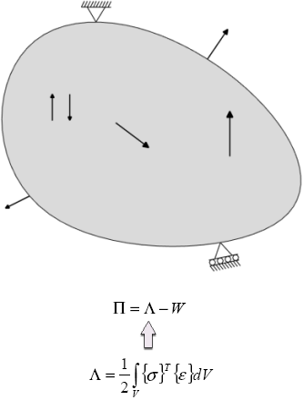
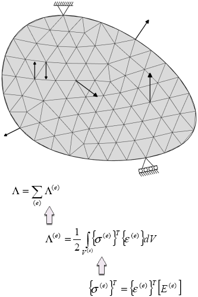
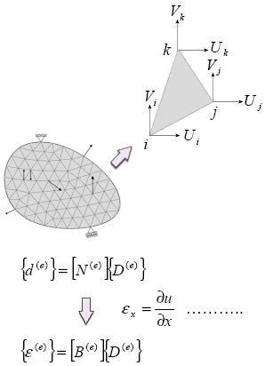
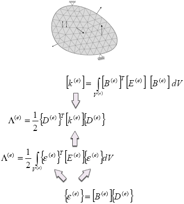
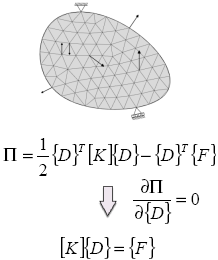
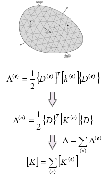
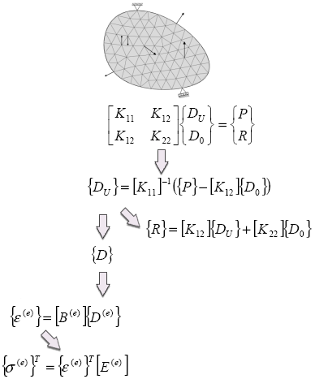

有限元方法是用来实现有限元分析的数字程序，有限元方法可以用在结构、流体机械以及热传导等其它问题上。
使用最小势能原则，有限元方法可以用来求解静态结构问题，基本公式为：
当结构处于静态平衡时，势能 Π 最小
结构的势能等于结构的应变能 Λ 减去外力的工作势能 W

通过把结构分为离散的称为单元的区域来创建有限元网格，单元之间相互连接的点称为节点。
单元都是简单的几何体，比如2D 问题中的三角形或者四边形，以及3D 问题中的四面体和六面体
节点是施加力和约束的地方，并会计算它们的反作用力和位移
结构的应变能是单元应变能 Λ(e) 的总和
单元应变能是单元应力场{σ(e)}与单元应变场{ε(e)}的内积，然后在单元体积 V(e) 下积分
本构矩阵[E(e)]与应力及应变有关

要评估单元应变能的表达式，必须对单元的位移场做一些假设
单元内任意位置的位移都是节点位移的插值
插值函数通常称为形状函数
假设的位移场{d(e)}是形状函数矩阵[N(e)]与节点位移{D(e)}的乘积
单元应变场由假定的位移场微分得出

单元刚度矩阵[k(e)]，与节点位移以及单元应变能有关
单元刚度矩阵是根据形状函数[B(e)]的导数以及本构矩阵来表示的
单元刚度矩阵中的项是通过在单元体积下积分获得的

平衡方程是通过使结构势能最小化获得的
全局位移矢量{D}包含所有节点位移的集合
结构的应变能是根据全局位移矢量以及全局刚度矩阵[K]来表示的，后者是表示整个结构的刚度的矩阵
外力的工作势能表示为全局位移矢量与外力矢量{F}(包括施加在该节点上的外力)的内积

全局刚度矩阵是单元刚度矩阵的集合
单元刚度矩阵的大小将会增加以与全局位移矢量相一致
将会把各个单元刚度矩阵的相应部分相加，以生成全局刚度矩阵

全局刚度矩阵集合后，平衡方程将会被分割，以把已知的节点位移 D0 和未知的节点位移 DU 分离，这么做也把外力矢量 F 分割为：
已知的输入力 P，用在节点位移未知的地方
未知的反作用力 R，用在节点位移已知的地方
分割后的平衡方程将会被求解以得出未知的节点位移，根据节点位移，其它结果，比如反作用力、应变、应力等等都可以计算，这些最终的计算被称为结果恢复。
